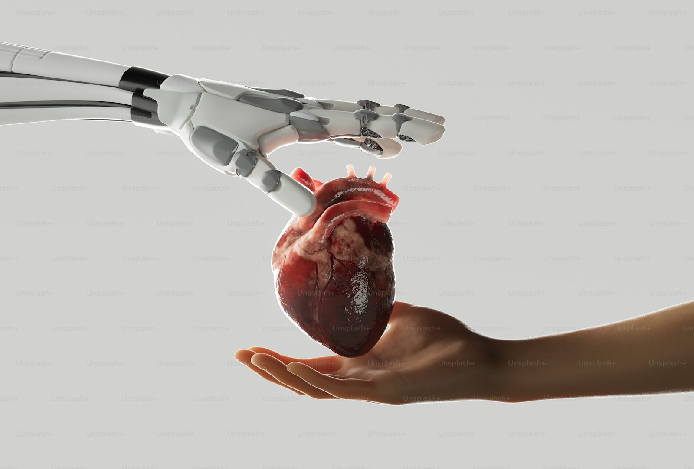

UST — Retail AI & Physical AI
AI-driven retail intelligence: Bluetooth labeling, real-time inventory, and just-in-time operations across large retail environments.
Read Case Study →

Uptake — Industrial AI Platform
Unified OT data ingestion, predictive maintenance, and the Asset Strategy Library powering industrial intelligence.
Read Case Study →
Dell Technologies — HPC & Data Protection
HPC for healthcare and research, plus predictive anomaly detection for ransomware and data corruption.
Read Case Study →

Schneider Electric — DCIM
The earliest blueprint of Physical AI: multi-vendor sensor integration, thermal modeling, and real-time control.
Read Case Study →